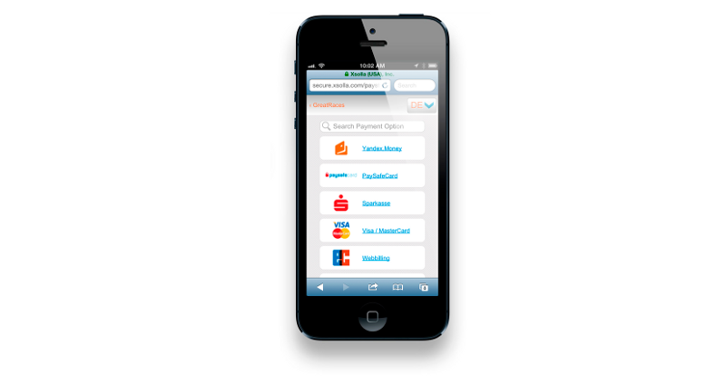

<div class="row-fluid">
	<div class="span12">
		<h1>XSOLLA Payment API</h1>
		<p>XSOLLA is an international payment solution provider specializing in online game payments. See our profile: <a href="http://xsolla.com/xsolla_profile.pdf">http://xsolla.com/xsolla_profile.pdf</a></p>

		<h1>Please follow these easy steps:</h1>
		<ol>
			<li><a href="https://account.xsolla.com/index.php?a=registrationForm">Register</a> your account.</li>
			<li>Read our <a href="currency.html">Virtual Currency</a> and <a href="cash.html">Cash</a> protocol documentation.</li>
			<li><a href="https://account.xsolla.com/index.php?a=projects&ext=drawfrmnewproject">Add a new project</a> to your account.</li>
			<li>Read our <a href="paybar.html">PayBar</a> and <a href="paystation.html">PayStation</a> guides and implement one of these tools.</li>
			<li>Test your new project and go live.</li>
		</ol>

		<h1>Paystation</h1>
		

		<h1>Credit cards form + PayBar</h1>
		

		<h1>Mobile Paystation</h1>
		

		<h1>Virtual Currency Protocol</h1>
		<p>Xsolla's Virtual Currency Protocol allows the exchange of real currency into virtual currency with a preset exchange rate. The Virtual Currency Protocol is an easy and accessible solution for those projects which have in-game virtual currency with a predetermined value. Users get a preset amount of virtual currency when they replenish their accounts in-game. Players can make payments from e-wallets, cash kiosks, mobile, online-banking, etc.</p>
		<h2>Implementing Virtual Currency Protocol</h2>
		<p>Implementing Xsolla's Virtual Currency Protocol is as easy as editing the included <a href="https://github.com/xsolla/Xsolla-Payment-API/blob/master/examples/virtual_currency_protocol/inc/config.php">config.php</a> to include your database information and secret key. Simply extend the included VirtualCurrency class found in <a href="https://github.com/xsolla/Xsolla-Payment-API/blob/master/examples/virtual_currency_protocol/inc/virtual_currency_protocol.php">VirtualCurrency.php</a> and implement the following methods for database handling:</p>
		<dl>
			<dt>setupDB()</dt>
			<dd>this method is responsible for configuring a connection to your database by instantiating a PDO object</dd>
			<dt>userExists($user)</dt>
			<dd>this method checks the database for a user and returns a boolean true if found or false otherwise</dd>
			<dt>invoiceExists($invoiceID)</dt>
			<dd>this method checks the database for the existence of an invoice and returns boolean true if found or false otherwise</dd>
			<dt>newInvoice($invoiceID, $userID, $sum)</dt>
			<dd>this method inserts a new invoice into your database</dd>
			<dt>cancelInvoice($invoiceID)</dt>
			<dd>this method deletes an invoice from your database</dd>
		</dl>
		<p>if you have questions about how to implement these methods please see the included <a href="https://github.com/xsolla/Xsolla-Payment-API/blob/master/examples/virtual_currency_protocol/example.php">example.php</a> which utilizes the database structure found in <a href="https://github.com/xsolla/Xsolla-Payment-API/blob/master/examples/virtual_currency_protocol/example.sql">example.sql</a>. We also have other samples:</p>
		<ul>
			<li><a href="https://github.com/xsolla/Xsolla-Payment-API/blob/master/examples/virtual_currency_protocol/standart.protocol.implementation_en_asp.asp">ASP/VB Sample</a></li>
			<li><a href="https://github.com/xsolla/Xsolla-Payment-API/blob/master/examples/virtual_currency_protocol/standart.protocol.implementation_en_aspx.aspx.cs">ASP.NET/C# Sample</a></li>
			<li><a href="https://github.com/xsolla/Xsolla-Payment-API/blob/master/examples/virtual_currency_protocol/standart.protocol.implementation_en_c.c">C Sample</a></li>
			<li><a href="https://github.com/xsolla/Xsolla-Payment-API/blob/master/examples/virtual_currency_protocol/standart.protocol.implementation_en_cpp.h">C++ Sample</a></li>
			<li><a href="https://github.com/xsolla/Xsolla-Payment-API/blob/master/examples/virtual_currency_protocol/standart.protocol.implementation_en_python.py">Python Sample</a></li>
			<li><a href="https://github.com/xsolla/Xsolla-Payment-API/blob/master/examples/virtual_currency_protocol/standart.protocol.implementation_en_ruby.rb">Ruby Sample</a></li>
		</ul>

		<h1>Cash Protocol</h1>
		<p>Xsolla's Cash Protocol enables game projects to sell packs of virtual goods and services. When using this protocol, an order is made on the side of the game project.</p>
		<p>For additional information about protocols, please visit <a href="http://xsolla.com/docs/section/protocols">http://xsolla.com/docs/section/protocols</a></p>

		<h1>Additional resources</h1>
		<p>If you need any help please <a href="mailto:a.menshikov@xsolla.com">contact us</a>. If you found an issue or need to create new API, please add your request <a href="https://github.com/xsolla/Xsolla-Payment-API/issues">here</a></p>
		<p>-Xsolla Team</p>
	</div>
</div>
